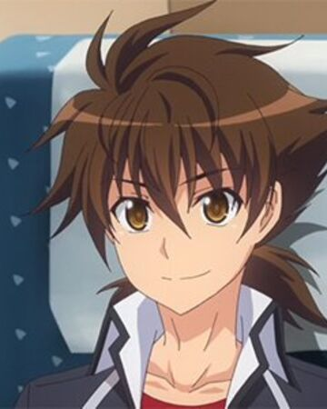
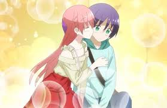
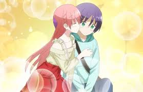
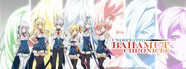
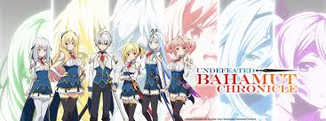
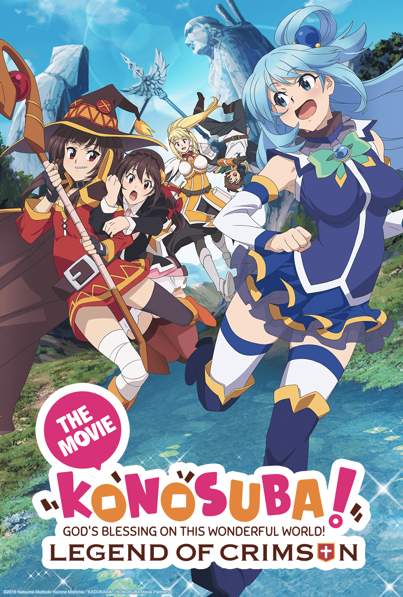
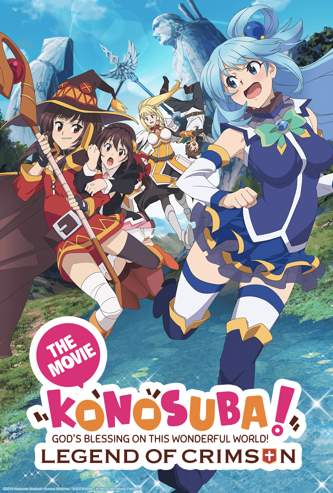

Anime is just the perfect thing for those, who are fascinated with animation which narrate amazing storylines. The visuals leave an impact hard enough to make you re-watch it. Anime is like a dreamland, carrying great stories with a rainbow of emotions.
I have infinite reasons for loving anime, but a few are listed below:
- Storylines - Plots and storylines are amazing beyond words. They literally widen your brain’s imaginative domain. Anime provides a look into the human heart in this way. This is also the reason anime be it an anime film or anime series often brings tears and even profound reflection to a viewer. It forces you to confront topics and ask questions.
- Animation - Honestly, I think anime is a form of entertainment with the perfect graphics. Animation allows creators to tell more fantastic stories visually.
- Characters and Character Development - One of the most interesting thing about the anime industry is, the depth of characterization. The circumstances would make you feel their emotions as if they were real. Moreover, the character development that a character goes through as the series progress is remarkable. You will come to know the backstories, the hardships that made the character the way it used to be.
- Soundtracks - The background music, OP, ED, etc. paints the anime in a new color. They light up the moment, intense the moment, or makes everything depressing, all according to the plot, which makes the anime more enjoyable. The music is so beautiful that it would play your heart like an instrument, and when you get to know the meaning of the lyrics its more gorgeous.
- Intense Battles - The fight scenes are on whole another level.
- Portrayed Topics - Various topics are portrayed in anime that the society doesn't accept or doesn't give much ear to, like- LGBTQ, depression, social anxiety, love issues, PTSD, bullying, etc. Topics like these are brought to light and discussed vastly.
- Motivation and Quotes - The best anime in the world take you to a whole other universe altogether. It gives teachings about friendship, coping up with sadness, winning against all odds, and giving fresh perspectives to your world view. They don't always blabber about the lines of justice and the narrow righteous path. They tell that sometimes, its okay to break the rules.
- Voice Actors and Actresses - They are a vital part of the anime industry. The way in which they show their expressions through their voice is just amazing. I really find it impressive how they convey the right amount of emotions in the right direction.

Issei Hyoudou
Issei Hyoudou is the main male protagonist of the light novel and anime series High School DxD. He is a second-year student at Kuoh Academy and a member of the school's "Perverted Trio", a trio of the most perverted men in the entire student body
Despite his pervertedness, Issei is courageous, selfless and unwaveringly determined to protect those who are important to him, despite almost dying by the hands of his opponents. Having great kindness, Issei is also very caring, "putting his nose into other people's business" as he helped Yuuto Kiba, Koneko Toujou, and Akeno Himejima overcome their fears and hatred of their mournful past. Due to this, he gained strong friendship from his comrades and affection from most girls of the Occult Research Club and a strong sense of friendship with higher-up Devils like Rias' family; they have told him to use the same titles for them as Rias (Father, Mother, Brother, etc.), yet he still remains the same.
Popular Anime that I like
List of anime I like + Reviews:
- TONIKAWA: Over the Moon for You ( Tonikaku Kawaii )
- Darling in the Franxx
- Sakura-sou Pet na Kanojo ( The Pet Girl of Sakurasou )
- Date A Live
- High School DxD
- Sword Art Online
- Black Clover
- Infinite Stratos
- Rent-A-Girlfreind
- Seven Deadly Sins
- Undeafeted Bahamut Chronical
- Dr Stone
- Assasins Pride
- Re: Zero
- The Asterisk War
- Chivalry of a Failed Knight
Photo Gallery of favorite characters
 



 



 



Ichiei Ishibumi
In 2005, Ishibumi received a special prize in the 17th Fantasia Awards hosted by Fujimi Shobo for the light novel Denpachi that he submitted. He made his debut with that novel when it was published in 2006 as a tankōbon. The same year, he published his second light novel Slash/Dog. Two years later, in 2008, he began publishing the light-novel series High School DxD, with 25 volumes published as well as an additional 4 volumes of a sequel series, Shin High School DxD. The series has been adapted into multiple manga and anime television series. While preparing the light novels, his father died.